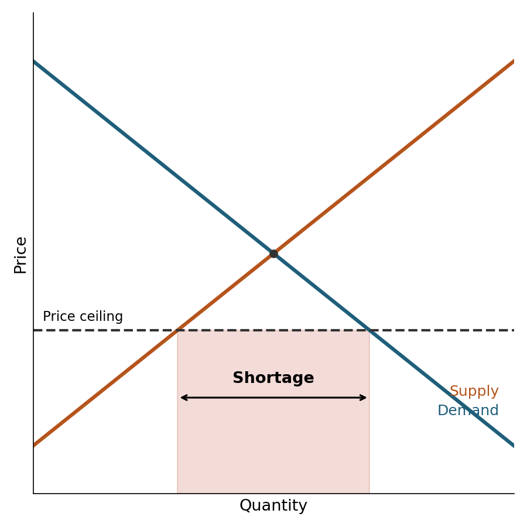
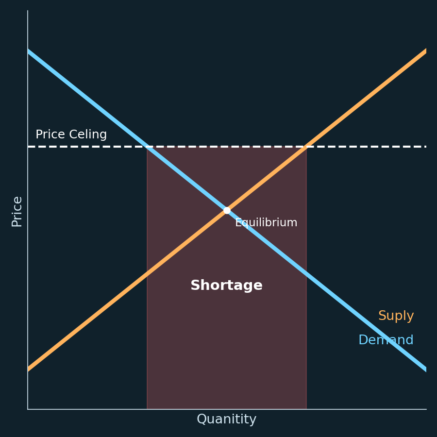

Work samples / Pairwise image comparison
Pairwise image evaluation: same prompt, two generated images
The assignment type: compare two images generated from one prompt, with model identities hidden and order randomized, and choose Prefer A, Prefer B, Both good or Both bad. Criteria: prompt fulfilment, composition, visual artifacts, rendered text and spelling, named entities and overall coherence. Every rating needs a rationale.
1. The prompt
"A clean textbook-style diagram of a binding price ceiling. Label the axes 'Price' and 'Quantity', label the two curves 'Supply' and 'Demand', draw the ceiling as a dashed line below the equilibrium price, and shade the shortage."
2. The two images


3. The rating
Rationale. A fulfils every element of the prompt: correct axis labels, a dashed ceiling below the equilibrium price, and the shortage shaded between quantity supplied and quantity demanded at the ceiling, with a double-headed arrow marking its width. B fails the core instruction. Its ceiling sits above equilibrium, where a ceiling does not bind, so there is no shortage to shade; the region it labels "Shortage" has no economic meaning. B also has three spelling errors in rendered text ("Suply", "Quanitity", "Price Celing"). B's dark styling and equilibrium label look more finished, but polish does not offset a wrong diagram and misspelled labels.
Why not "Both good". B is wrong on content and text, so it cannot be rated good.
Why not "Both bad". A has one real flaw: both curve labels sit together at the lower right, and "Supply" is printed beside the end of the demand curve, so a reader must trace colour to tell which label belongs to which line. This is a legibility issue, not a content error; every prompt requirement is met. A is usable as is; B is not.
Criterion checklist
| Criterion | Image A | Image B |
|---|---|---|
| Prompt fulfilment | All elements present | Ceiling above equilibrium: not binding |
| Rendered text and spelling | Correct | 3 misspellings |
| Label placement | Curve labels crowded; "Supply" beside demand line | Same crowding |
| Composition | Clean, textbook style as requested | Dark theme; not textbook style |
| Artifacts | None | None |
| Coherence | Shading matches the economics | "Shortage" label contradicts the diagram |
Both images were rendered for this portfolio to stand in for two model outputs. They are not client data and were not produced by any image model.